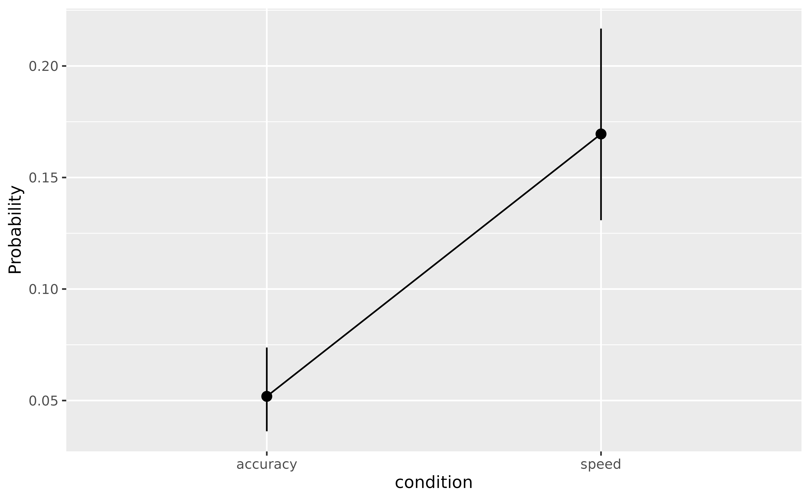
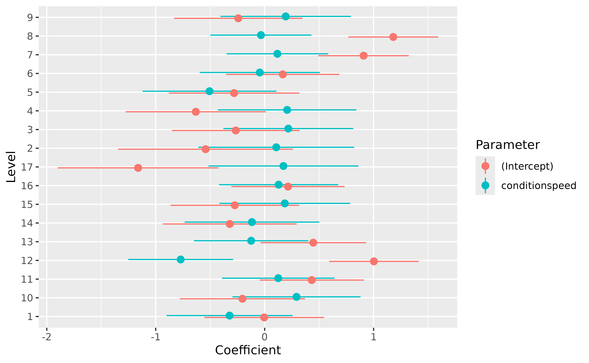

How to use Mixed models to Estimate Individuals' Scores
Source:vignettes/estimate_grouplevel.Rmd
estimate_grouplevel.RmdMixed models are powerful tools that can be used for a variety of interesting purposes. Indeed, while they are typically used to be more accurate and resilient in estimating population-level effects (aka the “fixed” effects), they can also be used to gain insight into group-level effects (e.g., individuals’ scores, if the random factors are individuals).
For this practical walkthrough on advanced mixed model analysis, we will use the Speed-Accuracy Data (Wagenmakers, Ratcliff, Gomez, & McKoon, 2008) from the rtdists package, in which 17 participants (the id variable) performed some reaction time (RT) task under two conditions, speed and accuracy (the condition variable).
Our hypotheses is that participants are faster (i.e., lower RT) in the speed condition as compared to the accuracy condition. On the other hand, they will make less errors in the accuracy condition as compared to the speed condition.
In the following, we will load the necessary packages and clean the data by removing outliers and out-of-scope data.
# easystats packages
library(parameters)
library(correlation)
library(performance)
library(modelbased)
library(datawizard)
library(see)
# other packages
library(ggplot2)
library(poorman)
library(rtdists)
library(lme4)
data <- rtdists::speed_acc %>%
# Remove outliers & Keep only word condition
filter(
rt < 1.5,
stim_cat == "word",
frequency == "low"
) %>%
# Add new 'error' column that is 1 if the response doesn't match the category
mutate(error = ifelse(as.character(response) != as.character(stim_cat), 1, 0))Speed (RT)
Population-level Effects
For the reaction time, we will start by removing all the incorrect responses, since they are not reflective of a “successful” cognitive process. Then, and we will plot the RT according to the condition and stimulus category.
data_rt <- filter(data, error == 0)
ggplot(data = data_rt, aes(y = rt, condition)) +
geom_violin()
The descriptive visualisation indeed seems to suggest that people are slower in the accuracy condition as compared to the speed condition. And there could also be a slight effect of frequency.
Let’s verify that using the modelisation approach.
model_full <- lmer(rt ~ condition + (1 + condition | id) + (1 | stim),
data = data_rt
)Let’s unpack the formula of this model. We’re tying to predict rt using different terms. These can be separated into two groups, the fixed effects and the random effects. Having condition as a fixed effect means that we are interested in estimating the “general” effect of the condition, across all subjects and items (i.e., at the population level). On top of that effect of condition, a second ‘fixed’ parameter was implicitly specified and will be estimated, the intercept (as you might know, one has to explicitly remove it through rt ~ 0 + condition, otherwise it is added automatically).
Let’s investigate these two fixed parameters first:
parameters(model_full, effects = "fixed")> # Fixed Effects
>
> Parameter | Coefficient | SE | 95% CI | t(4506) | p
> --------------------------------------------------------------------------
> (Intercept) | 0.69 | 0.02 | [ 0.65, 0.74] | 30.44 | < .001
> condition [speed] | -0.16 | 0.02 | [-0.19, -0.12] | -8.53 | < .001Because condition is a factor with two levels, these parameters are easily interpretable. The intercept corresponds to the rt at the baseline level of the factor (accuracy), and the effect of condition corresponds to the change in rt between the intercept and the speed condition. In other words, the effect of condition refers to the difference between the two conditions, speed - accuracy.
As we can see, this difference is significant, and people have, in general, a lower rt (the sign is negative) in the speed condition.
Let’s visualize the marginal means estimated by the model:
estimate_means(model_full) %>%
plot(show_data = "violin")
Now, what’s up with the random effects. In the formula, we specified random intercepts (i.e., the right part of the bar | symbol) for id (the participants) and stim. That means that each participant and each stimulus will have its own “Intercept” parameter (which, as we’ve seen before, corresponds to the rt in the accuracy condition). Additionally, we’ve specified the random effect (“random slope” - the left side of the bar) of condition for each participant. That means that each participant will have its own effect of condition computed.
But do we need such a complex model? Let’s compare it to a model without specifying random intercepts for the stimuli.
model <- lmer(rt ~ condition + (1 + condition | id), data = data_rt)
test_performance(model_full, model)> Name | Model | BF | df | df_diff | Chi2 | p
> --------------------------------------------------------------
> model_full | lmerMod | | 7 | | |
> model | lmerMod | < 0.001 | 6 | -1.00 | 36.78 | < .001
> Models were detected as nested and are compared in sequential order.Mmmh, it seems that the simpler model performs a lot worse (the Bayes Factor is lower than 1). We could run compare_performance() to learn more details, but for this example we will go ahead and keep the worse model (for simplicity and conciseness when inspecting the random effects later, but keep in mind that in real life it’s surely not the best thing to do).
Group-level Effects
That’s nice to know, but how to actually get access to these group-level scores. We can use the estimate_grouplevel() function to retrieve them.
random <- estimate_grouplevel(model)
random> Group | Level | Parameter | Coefficient | SE | 95% CI
> --------------------------------------------------------------------
> id | 1 | (Intercept) | -0.10 | 0.01 | [-0.12, -0.07]
> id | 1 | conditionspeed | 0.09 | 0.02 | [ 0.06, 0.12]
> id | 2 | (Intercept) | 0.08 | 0.02 | [ 0.04, 0.12]
> id | 2 | conditionspeed | -0.03 | 0.02 | [-0.07, 0.01]
> id | 3 | (Intercept) | 0.02 | 0.01 | [ 0.00, 0.05]
> id | 3 | conditionspeed | -0.02 | 0.02 | [-0.05, 0.01]
> id | 4 | (Intercept) | -0.13 | 0.01 | [-0.15, -0.10]
> id | 4 | conditionspeed | 0.08 | 0.02 | [ 0.05, 0.11]
> id | 5 | (Intercept) | -0.05 | 0.01 | [-0.08, -0.03]
> id | 5 | conditionspeed | 6.67e-03 | 0.02 | [-0.02, 0.04]
> id | 6 | (Intercept) | -0.08 | 0.01 | [-0.10, -0.05]
> id | 6 | conditionspeed | 0.04 | 0.02 | [ 0.01, 0.07]
> id | 7 | (Intercept) | -0.09 | 0.01 | [-0.12, -0.07]
> id | 7 | conditionspeed | 0.10 | 0.02 | [ 0.06, 0.13]
> id | 8 | (Intercept) | 0.21 | 0.01 | [ 0.19, 0.24]
> id | 8 | conditionspeed | -0.18 | 0.02 | [-0.21, -0.14]
> id | 9 | (Intercept) | 0.03 | 0.01 | [ 0.00, 0.05]
> id | 9 | conditionspeed | -0.02 | 0.02 | [-0.05, 0.01]
> id | 10 | (Intercept) | -0.10 | 0.01 | [-0.13, -0.08]
> id | 10 | conditionspeed | 0.07 | 0.02 | [ 0.04, 0.10]
> id | 11 | (Intercept) | -0.09 | 0.01 | [-0.11, -0.07]
> id | 11 | conditionspeed | 0.07 | 0.02 | [ 0.04, 0.11]
> id | 12 | (Intercept) | -6.47e-04 | 0.01 | [-0.03, 0.02]
> id | 12 | conditionspeed | 3.65e-03 | 0.02 | [-0.03, 0.04]
> id | 13 | (Intercept) | 0.08 | 0.01 | [ 0.05, 0.10]
> id | 13 | conditionspeed | -0.06 | 0.02 | [-0.09, -0.02]
> id | 14 | (Intercept) | 0.03 | 0.01 | [ 0.01, 0.06]
> id | 14 | conditionspeed | -0.03 | 0.02 | [-0.06, 0.00]
> id | 15 | (Intercept) | 0.09 | 0.01 | [ 0.07, 0.11]
> id | 15 | conditionspeed | -0.07 | 0.02 | [-0.10, -0.04]
> id | 16 | (Intercept) | 0.04 | 0.01 | [ 0.02, 0.06]
> id | 16 | conditionspeed | -0.01 | 0.02 | [-0.05, 0.02]
> id | 17 | (Intercept) | 0.06 | 0.01 | [ 0.03, 0.08]
> id | 17 | conditionspeed | -0.05 | 0.02 | [-0.08, -0.02]Each of our participant (the Level column), numbered from 1 to 17, has two rows, corresponding to its own deviation from the main effect of the intercept and condition effect.
We can also use reshape_grouplevel() to select only the Coefficient column (and skip the information about the uncertainty - which in real life is equally important!) and make it match the original data. The resulting table has the same length as the original dataset and can be merged with it: it’s a convenient way to re-incorporate the random effects into the data for further re-use.
reshaped <- reshape_grouplevel(random, indices = "Coefficient")
head(reshaped)> id id_Coefficient_Intercept id_Coefficient_conditionspeed
> 1 1 -0.097 0.094
> 2 1 -0.097 0.094
> 3 1 -0.097 0.094
> 4 1 -0.097 0.094
> 5 1 -0.097 0.094
> 6 1 -0.097 0.094As you can see, the first row is repeated as it corresponds to the same participant (so the random effects are the same). Note that we can use summary() to remove all the duplicate rows. Let’s add it to the original data.
data_rt <- full_join(data_rt, reshaped, by = "id")We can also visualize the random effects:
plot(random) +
theme_lucid()
Wow! As we can see, there is a lot of between-participants variability. But what do these random parameters correspond to?
Correlation with empirical scores
We said above that the random effects are the group-level (the group unit is, in this model, the participants) version of the population-level effects (the fixed effects). One important thing to note is that they represent the deviation from the fixed effect, so a coefficient close to 0 means that the participants’ effect is the same as the population-level effect. In other words, it’s “in the norm” (note that we can also obtain the group-specific effect corresponding to the sum of the fixed and random by changing the type argument).
Nevertheless, let’s compute some empirical scores, such as the condition averages for each participant.
We will group the data by participant and condition, get the mean RT, and then reshape the data so that we have, for each participant, the two means as two columns. Then, we will create a new dataframe (we will use the same - and overwrite it - to keep it concise), in which we will only keep the mean RT in the accuracy condition, and the difference with the speed condition (reminds you of something?).
data_sub <- aggregate(rt ~ id + condition, data_rt, mean) %>%
reshape_wider(names_from = "condition", values_from = "rt")
data_sub <- data.frame(
id = data_sub$id,
empirical_accuracy = data_sub$rt_accuracy,
empirical_condition = data_sub$rt_speed - data_sub$rt_accuracy
)Now, how to these empirical scores compare with the random effects estimated by the model? Let’s merge the empirical scores with the random effects scores. For that, we will run summary() on the reshaped random effects to remove all the duplicate rows (and have only one row per participant, so that it matches the format of data_sub).
Let’s run a correlation between the model-based scores and the empirical scores.
correlation(data_sub)> # Correlation Matrix (pearson-method)
>
> Parameter1 | Parameter2 | r | 95% CI | t(15) | p
> ------------------------------------------------------------------------------------------------------
> empirical_accuracy | empirical_condition | -0.94 | [-0.98, -0.84] | -10.72 | < .001***
> empirical_accuracy | id_Coefficient_Intercept | 1.00 | [ 1.00, 1.00] | 198.45 | < .001***
> empirical_accuracy | id_Coefficient_conditionspeed | -0.98 | [-0.99, -0.93] | -17.37 | < .001***
> empirical_condition | id_Coefficient_Intercept | -0.93 | [-0.98, -0.82] | -10.10 | < .001***
> empirical_condition | id_Coefficient_conditionspeed | 0.99 | [ 0.98, 1.00] | 29.16 | < .001***
> id_Coefficient_Intercept | id_Coefficient_conditionspeed | -0.97 | [-0.99, -0.92] | -15.95 | < .001***
>
> p-value adjustment method: Holm (1979)
> Observations: 17First thing to notice is that everything is significantly and strongly correlated!.
Then, the empirical scores for accuracy and condition, corresponding to the “raw” average of RT, correlate almost perfectly with their model-based counterpart (\(r_{empirical\_accuracy/Coefficient\_Intercept} = 1\); \(r_{empirical\_condition/Coefficient\_conditionspeed} > .99\)). That’s reassuring, it means that our model has managed to estimate some intuitive parameters!
Finally, we can observe that there is a strong and negative correlation (which is even more salient with model-based indices) between the RT in the accuracy condition and the effect of the speed condition:
ggplot(data_sub, aes(x = id_Coefficient_Intercept, y = id_Coefficient_conditionspeed)) +
geom_point() +
geom_smooth(method = "lm") +
theme_modern()
The slower they are in the accuracy condition, the bigger the difference with the speed condition.
Accuracy
In this section, we will take interest in the accuracy - the probability of making errors, using logistic models. For this, we will use the dataset that still includes the errors (data, and not data_rt used in the previous section).
We will fit a logistic mixed model to predict the likelihood of making error depending on the condition. Similarly, we specified a random intercept and random effect of condition for the participants.
model <- glmer(error ~ condition + (1 + condition | id),
data = data, family = "binomial"
)
parameters(model, effects = "fixed")> # Fixed Effects
>
> Parameter | Log-Odds | SE | 95% CI | z | p
> ----------------------------------------------------------------------
> (Intercept) | -2.91 | 0.19 | [-3.28, -2.53] | -15.15 | < .001
> condition [speed] | 1.32 | 0.15 | [ 1.02, 1.61] | 8.73 | < .001The parameters suggest that in general, participants indeed make more errors in the speed condition as compared to the accuracy condition. We can visualize the average probability (i.e., the marginal means) of making errors in the two conditions.
plot(estimate_means(model), show_data = "none")
Similarly, we can extract the group-level effects, clean them (rename the columns, otherwise it will be the same names as for the RT model), and merge them with the previous ones.
random <- estimate_grouplevel(model)
random> Group | Level | Parameter | Coefficient | SE | 95% CI
> --------------------------------------------------------------------
> id | 1 | (Intercept) | -4.68e-03 | 0.28 | [-0.55, 0.54]
> id | 1 | conditionspeed | -0.32 | 0.30 | [-0.90, 0.26]
> id | 2 | (Intercept) | -0.54 | 0.41 | [-1.34, 0.26]
> id | 2 | conditionspeed | 0.11 | 0.36 | [-0.61, 0.82]
> id | 3 | (Intercept) | -0.26 | 0.30 | [-0.85, 0.32]
> id | 3 | conditionspeed | 0.22 | 0.30 | [-0.38, 0.81]
> id | 4 | (Intercept) | -0.63 | 0.33 | [-1.28, 0.01]
> id | 4 | conditionspeed | 0.21 | 0.32 | [-0.43, 0.84]
> id | 5 | (Intercept) | -0.28 | 0.31 | [-0.88, 0.32]
> id | 5 | conditionspeed | -0.51 | 0.31 | [-1.12, 0.11]
> id | 6 | (Intercept) | 0.17 | 0.26 | [-0.35, 0.69]
> id | 6 | conditionspeed | -0.04 | 0.28 | [-0.60, 0.51]
> id | 7 | (Intercept) | 0.91 | 0.21 | [ 0.49, 1.32]
> id | 7 | conditionspeed | 0.12 | 0.24 | [-0.35, 0.58]
> id | 8 | (Intercept) | 1.18 | 0.21 | [ 0.77, 1.59]
> id | 8 | conditionspeed | -0.03 | 0.24 | [-0.50, 0.43]
> id | 9 | (Intercept) | -0.24 | 0.30 | [-0.83, 0.35]
> id | 9 | conditionspeed | 0.19 | 0.31 | [-0.41, 0.79]
> id | 10 | (Intercept) | -0.20 | 0.29 | [-0.78, 0.37]
> id | 10 | conditionspeed | 0.29 | 0.30 | [-0.30, 0.88]
> id | 11 | (Intercept) | 0.43 | 0.24 | [-0.05, 0.91]
> id | 11 | conditionspeed | 0.12 | 0.26 | [-0.39, 0.64]
> id | 12 | (Intercept) | 1.00 | 0.21 | [ 0.59, 1.41]
> id | 12 | conditionspeed | -0.77 | 0.25 | [-1.25, -0.29]
> id | 13 | (Intercept) | 0.45 | 0.25 | [-0.04, 0.93]
> id | 13 | conditionspeed | -0.12 | 0.27 | [-0.65, 0.40]
> id | 14 | (Intercept) | -0.32 | 0.31 | [-0.93, 0.29]
> id | 14 | conditionspeed | -0.12 | 0.32 | [-0.73, 0.50]
> id | 15 | (Intercept) | -0.27 | 0.30 | [-0.86, 0.32]
> id | 15 | conditionspeed | 0.18 | 0.31 | [-0.42, 0.78]
> id | 16 | (Intercept) | 0.21 | 0.26 | [-0.30, 0.73]
> id | 16 | conditionspeed | 0.13 | 0.28 | [-0.42, 0.68]
> id | 17 | (Intercept) | -1.16 | 0.38 | [-1.90, -0.42]
> id | 17 | conditionspeed | 0.17 | 0.35 | [-0.52, 0.86]
plot(random)